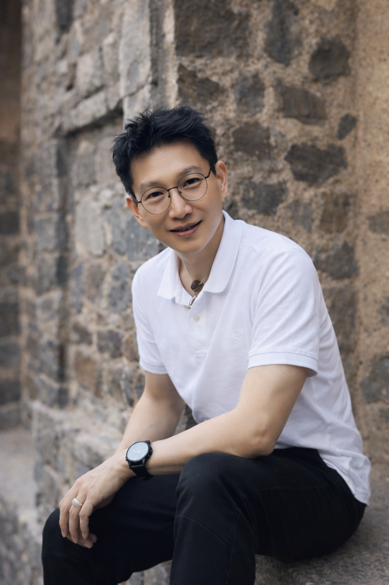

Many traditional forms — rituals, doctrines, symbolic language — no longer translate clearly for contemporary or future generations.
What remains, when these layers are removed, is not abstraction, but precision.
Founder Statement
The work of Che’an Institute begins here.
For much of modern life, progress has been framed as effort: work harder, think smarter, become more disciplined, more informed, more optimized. Yet this model repeatedly fails when a person’s inner state is fragmented.
Across cultures, belief systems, and modern psychology, one pattern consistently emerged: meaningful change did not occur through accumulation of advice or force of will, but when inner coherence returned — when internal noise softened, the body released its bracing, and clarity became accessible again.
Che’an Institute exists not to diagnose individuals, prescribe belief, or replace human judgment — but to study and build the conditions under which inner coherence can return naturally.
This requires removing what no longer translates.
Ritual without relevance.
Symbolism without clarity.
Language that obscures rather than reveals.
What remains is a grounded, measurable, and emotionally honest approach — one that future generations can engage without adopting inherited frameworks that no longer resonate.
Inner-State AI™ is part of this commitment. Not as a replacement for human connection, but as a reflective presence — designed to help individuals return to themselves with calm, without judgment, and without control.
This is the legacy Che’an Institute is committed to building: a clear and contemporary way to restore inner coherence — so people can realign, move forward, and live the life they are meant to live.
